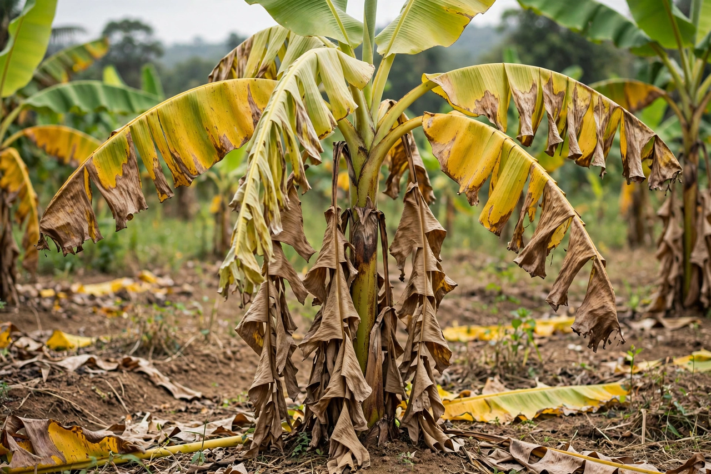

Panama disease

Causal agent: Fusarium oxysporum f. sp. cubense
Hosts: Banana and plantain (Musa)
Type: Soil-borne fungal wilt
Panama disease (or Fusarium wilt of banana) is a plant disease of banana plants (Musa spp.) caused by the soil-borne fungus Fusarium oxysporum f. sp. cubense. The fungus infects the roots, colonises the water-conducting xylem vessels, and progressively blocks water transport, so the leaves yellow, wilt and collapse and the plant dies. It is considered one of the most destructive diseases of banana in history.
History
The disease was first reported in Australia in the 1870s and took its common name from Panama, where it devastated plantations in the early 20th century. Race 1 of the pathogen destroyed the export industry based on the Gros Michel cultivar; by the 1950s and 1960s exporters had switched to resistant Cavendish cultivars, which now dominate world trade.
Tropical Race 4
A new strain, Tropical Race 4 (TR4), emerged in Southeast Asia in the late 20th century and attacks Cavendish bananas as well as many varieties immune to earlier races. It has since spread through Asia, the Middle East, Africa (Mozambique) and, from 2019, Latin America, where it was confirmed in Colombia and later Peru and Venezuela. Because the fungus persists in soil for decades as resting spores, there is no effective chemical cure; management relies on quarantine, exclusion, clean planting material and the search for resistant varieties, including conventionally bred and genetically modified lines such as the QCAV-4 banana approved in Australia.
Symptoms and control
External symptoms begin with yellowing of older leaves, which collapse around the pseudostem; internally the vascular tissue is discoloured reddish-brown. Spread occurs in contaminated soil, water and planting suckers. Control measures include strict farm biosecurity, disinfecting tools and footwear, flood-fallowing or crop rotation where feasible, and breeding programmes aiming to combine resistance with acceptable fruit quality.